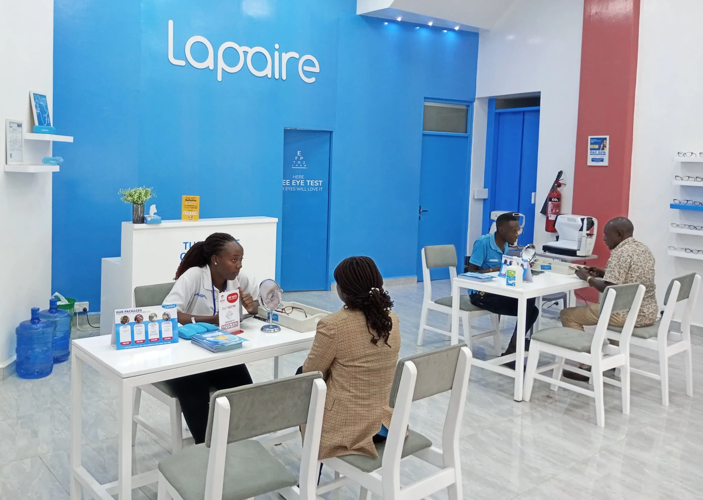

How we made it in Africa interviewed our Founder and CEO, Jerome Lapaire, to reflect about his entrepreneurial adventure with Lapaire back in 2018! In this article, we take a closer look at: * How Lapaire identified two major reasons why many people in Africa don´t waer glasses: awareness and affordability; *His initial B2B approach of reaching potential customers through their workplaces, instaed of direct sales, *The strategy of Lapaire Glasses to challenge the traditonal eyewear sector´s high-margin, low-volume model, similar to what IKEA has done in the furniture industry; *The unique market potential in French-speaking Africa due to the cultural perception of eyewear; and *The importnace of being willing toclose down a business unit that isn´t working.

Entrepreneur Capitalises On Africa´s Demand For Affordable Eyeglasses.
To get to know about it, follow the link to the article!
https://www.howwemadeitinafrica.com/entreoreneur-capitalises-onafricas-demand-for-affordable-eyeglasses/167819/